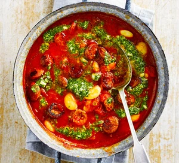

Chorizo-stew

Description
A simple four ingredient chorizo and butter bean stew
Cooks in just 20 minutes, eat with bread on the side for a tasty, quick, rustic stew
Ingredients
- 200 g cooking chorizo
- 2x400 g cans chopped tomato
- 2x400 g cans drained butter beans
- 1 tub of fresh pesto
Steps
- Slice the chorizo and tip into a large saucepan over a medium heat
- Fry gently for 5 mins or until starting to turn dark brown
- Add the tomatoes and butter beans, bring to the boil, then simmer for 10 mins
- Swirl through the pesto, season lightly and ladle into four bowls.